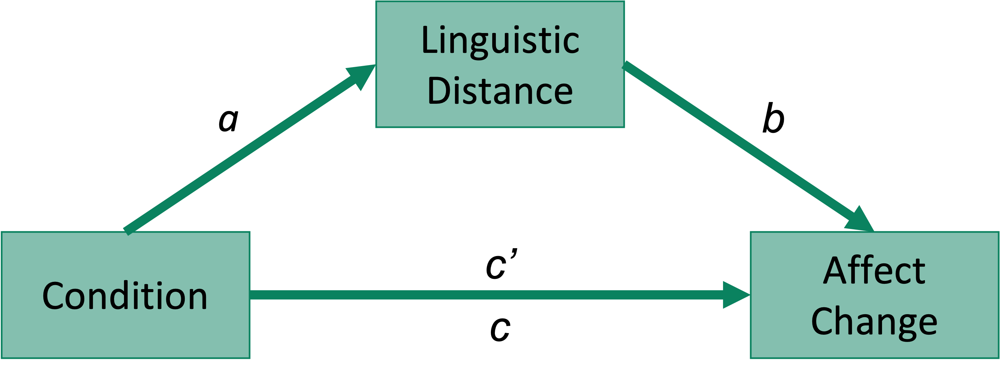
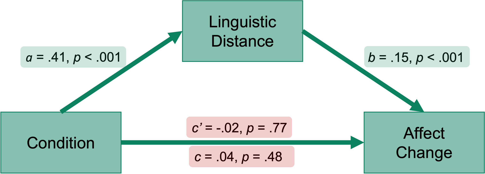

library(tidyverse)
library(dplyr)
library(lsr)
library(mediation)
library(datawizard)
library(report)
library(knitr) # For nice tables
library(kableExtra) # For nice tables
library(ggplot2) # For nice plotsIntro
Here, I’ll provide a walkthrough of the analyses I ran for a mediation study. This example uses data from a study examining the effects of a linguistic distancing manipulation on reappraisal efficacy in a sample of adolescents. (Please note that the data in this example has been simulated from the real data using the faux package in R) Participants were randomized into control and distanced groups before completing a cognitive reappraisal exercise. The distanced group were instructed to avoid using the word “I” and the present tense, while the control group received no specific instructions. Linguistic distancing was computed using the LIWC software. Affect was measured both pre- and post-reappraisal on a sliding scale from Very Bad (-100) to Very Good (100). The pre-post change in affect was used as our outcome measure of reappraisal success. See osf.io/5pvfh for more details.
These are the 4 questions we wanted to test:
- Does linguistic distancing differ by condition?
- Is linguistic distancing correlated with affect change?
- Does affect change differ by condition?
- Does linguistic distancing mediate the association between condition and affect change? (see figure below)

Environment set-up
First, lets load in all the packages we need. If you don’t have a package installed, you can run install_packages(‘packagename’)
Code
options(scipen=999, digits=3)Next, load in your data.
data <- read_csv("data.csv")My data contains the following variables:
ID: Participant ID
Condition: 0 for control group, 1 for distanced group
psychdist: Score for linguistic distance
affect_change: Change in affect from pre- to post-reappraisal
WC: Total word count for reappraisal response
Here are the first 6 participants in the dataset:
Code
head(data) %>%
kable()| ID | Condition | psychdist | affect_change | WC |
|---|---|---|---|---|
| 1 | 0 | -0.625 | 30.3 | 42.6 |
| 2 | 0 | 0.276 | 18.7 | 115.2 |
| 3 | 0 | 0.652 | 109.6 | 48.5 |
| 4 | 0 | 0.146 | 35.2 | 79.7 |
| 5 | 0 | -0.015 | 57.2 | 33.1 |
| 6 | 0 | 0.198 | 36.9 | 121.9 |
Question 1. Does linguistic distancing differ by condition?
We can use a t-test to find out whether the linguistic distancing manipulation worked as expected i.e., whether the distanced group had higher distancing scores compared to the control group. The effect size can be measured using the Cohen’s d statistic.
# Does linguistic distancing differ by condition?
t.test(psychdist ~ Condition, data=data)
cohensD(psychdist ~ Condition, data=data)Code
t.test(psychdist ~ Condition, data=data) %>%
report_table() %>%
summary()Difference | 95% CI | t(996.08) | p | d
--------------------------------------------------------
-0.22 | [-0.28, -0.15] | -6.60 | < .001 | -0.42
Alternative hypothesis: two.sidedThere is a significant difference between the two groups, p < .001, d = .42.
We can visualize this difference using a bar plot. Here, I first calcualate the 95% confidence intervals, so we can show these on the plot. Then I use ggplot to create the plot - take a look at the comments to see what each line of code is doing.
lingdist_msd <- data %>%
dplyr::select(ID, Condition, psychdist) %>%
na.omit() %>% # Remove any missing values
group_by(Condition) %>%
summarize(mean = mean(psychdist), # Mean
sd = sd(psychdist), # Standard deviation
se = sd / sqrt(n()), # Standard error
CI_lower = mean - (1.96 * se), # Lower CI bound
CI_upper = mean + (1.96 * se)) %>% # Upper CI bound
mutate(Condition = as.factor(Condition))
ggplot(lingdist_msd, aes(x=Condition, y=mean)) + # Input variables
geom_bar(position=position_dodge(), stat="identity", # Add bars
fill="#4b5e9c") +
geom_errorbar(aes(ymin=CI_lower, ymax=CI_upper), width=.2) + # Add CI bars
scale_x_discrete(labels=c('Control',
'Distanced')) + # Rename x axis labels
coord_cartesian(ylim=c(-0.2, 0.2)) + # Set y axis limits
ylab("Mean Linguistic Distance") + xlab("") + # Set axes labels
theme_light(base_size=20) # Set plot theme and font size
Question 3. Does affect change differ by condition?
We expected that the groups would differ on affect change - we hypothesized that the distanced group would show a greater affect change than the control group. To test this, we can use a t-test:
# Does affect change differ by condition?
t.test(affect_change ~ Condition, data=data)Code
t.test(affect_change ~ Condition, data=data) %>%
report_table() %>%
summary()Difference | 95% CI | t(994.24) | p | d
------------------------------------------------------
-2.39 | [-9.02, 4.23] | -0.71 | 0.479 | -0.04
Alternative hypothesis: two.sidedThere is actually no statistically significant difference between the two groups, p = .479. We can again visualize the two groups using a bar plot:
Code
affect_change_msd <- data %>%
dplyr::select(ID, Condition, affect_change) %>%
rename(Change = affect_change) %>%
group_by(Condition) %>%
summarize(mean = mean(Change),
sd = sd(Change),
se = sd / sqrt(n()),
CI_lower = mean - (1.96 * se),
CI_upper = mean + (1.96 * se)) %>%
mutate(Condition = as.factor(Condition))
ggplot(affect_change_msd, aes(x=Condition, y=mean)) +
geom_bar(position=position_dodge(), stat="identity",
fill="#4b5e9c") +
geom_errorbar(aes(ymin=CI_lower, ymax=CI_upper), width=.2) +
scale_x_discrete(labels=c('Control',
'Distanced')) +
coord_cartesian(ylim=c(0,70)) +
ylab("Mean Affect Change") + xlab("") +
theme_light(base_size=20)
Question 4. Does linguistic distancing mediate the association between condition and affect change?
Now for the mediation analysis! First, lets standardize our continuous variables (linguistic distance and affect change) using the datawizard package. This will not change the significance of our results, but will provide standardized path estimates which can be more interpretable than non-standardized estimates.
# Create standardized variables
data <- data %>%
mutate(affect_change_z = datawizard::standardize(affect_change),
psychdist_z = datawizard::standardize(psychdist))Code
head(data) %>%
kable()| ID | Condition | psychdist | affect_change | WC | affect_change_z | psychdist_z |
|---|---|---|---|---|---|---|
| 1 | 0 | -0.625 | 30.3 | 42.6 | -0.4932 | -1.2099 |
| 2 | 0 | 0.276 | 18.7 | 115.2 | -0.7104 | 0.4951 |
| 3 | 0 | 0.652 | 109.6 | 48.5 | 0.9919 | 1.2069 |
| 4 | 0 | 0.146 | 35.2 | 79.7 | -0.4009 | 0.2498 |
| 5 | 0 | -0.015 | 57.2 | 33.1 | 0.0114 | -0.0553 |
| 6 | 0 | 0.198 | 36.9 | 121.9 | -0.3689 | 0.3470 |
We now have two extra columns (affect_change_z and psychdist_z) which contain the standardized values of psychdist and affect_change, respectively.
For the mediation, we will use the mediation package. We need to define 3 linear regression models:
- Total Effect: DV ~ IV
This will give us the the estimate for path c i.e., the total effect.
fit.totaleffect = lm(affect_change_z ~ Condition, data)
summary(fit.totaleffect)$coefficients Estimate Std. Error t value Pr(>|t|)
(Intercept) -0.0224 0.0447 -0.501 0.617
Condition 0.0448 0.0633 0.708 0.479- Effect of IV on Mediator: M ~ IV
This will give us the estimate for path a.
options(digits=3)
fit.mediator = lm(psychdist_z ~ Condition, data)
summary(fit.mediator)$coefficients Estimate Std. Error t value Pr(>|t|)
(Intercept) -0.204 0.0438 -4.67 0.0000034460595
Condition 0.409 0.0619 6.60 0.0000000000656- Effect of Mediator on DV, while controlling for IV: DV ~ IV + Mediator
This will give us the estimate for the direct effect of the IV on the DV, as well as path b of the mediation model.
fit.dv = lm(affect_change_z ~ Condition + psychdist_z, data)
summary(fit.dv)$coefficients Estimate Std. Error t value Pr(>|t|)
(Intercept) 0.00917 0.0447 0.205 0.83749942
Condition -0.01835 0.0639 -0.287 0.77411865
psychdist_z 0.15445 0.0320 4.831 0.00000158Now, we can run the mediation analysis using the mediation function. We need to specify the model for the mediator (regression 2), the model for outcome (regression 3), the treatment variables (Condition) and the mediator (psychdist_z). Then we specify how many bootstrap samples we want and the type of confidence interval we want. Here I have used 10,000 samples with bias-corrected and accelerated (BCa) confidence intervals. Make sure you set a seed before running so that you can get reproducible results each time!
set.seed(123)
results = mediation::mediate(fit.mediator, fit.dv, treat='Condition', mediator='psychdist_z',
sims = 10000, boot=T, boot.ci.type = "bca")This gives us the following output:
summary(results)
Causal Mediation Analysis
Nonparametric Bootstrap Confidence Intervals with the BCa Method
Estimate 95% CI Lower 95% CI Upper p-value
ACME 0.0632 0.0349 0.10 <0.0000000000000002 ***
ADE -0.0183 -0.1433 0.11 0.80
Total Effect 0.0448 -0.0775 0.17 0.47
Prop. Mediated 1.4094 -4.6540 30.45 0.47
---
Signif. codes: 0 '***' 0.001 '**' 0.01 '*' 0.05 '.' 0.1 ' ' 1
Sample Size Used: 1000
Simulations: 10000 ACME stands for average causal mediation effects. This is the indirect, or mediation, effect of the IV on the DV. From this, we can see whether we have a significant mediation effect or not. Here, p < .001, so we can conclude that linguistic distance does mediate the effect of Condition on affect change. Note that the mediation effect estimate = path a * path b, the values of which we found previously (0.06 = 0.40 * 0.15).
ADE stands for average direct effects. This estimate is the effect of the IV on the DV, once we have controlled for the mediator. You can see that this estimate is equal to that found in regression 3.
Total Effect equals the sum of the direct and indirect effects of the IV on the DV. This is what we found in regression 1.
Prop. Mediated gives the size of the average causal mediation effects relative to the total effect. In this case, we get a value greater than 1. This indicates that the size of the mediation effect is larger than the total.
Interpretation
We can conclude that linguistic distance does act as a mediator of the association between condition (control or distanced) and pre- to post-reappraisal affect change. The distancing manipulation increases linguistic distance, and this is associated with greater affect change. Here is our final mediation model:

The results of this particular analysis are a little confusing: how can we have a significant mediation effect without a total effect? One reason for this may be an unmeasured variable acting as a mediator in the opposite direction. For example, maybe the distanced group are writing more during their reappraisal and experiencing the scenario more vividly, making it harder to reduce their negative affect. Using our WC (word count) variable, we can test whether word count differs by condition using a t-test:
Code
t.test(WC ~ Condition, data=data) %>%
report_table() %>%
summary()Difference | 95% CI | t(992.23) | p | d
----------------------------------------------------------
-19.76 | [-26.97, -12.55] | -5.38 | < .001 | -0.34
Alternative hypothesis: two.sidedThese results indicate that word count is indeed higher for the distanced group than the control group, p < .001. But does word count interact with condition to predict affect change? We can run a regression model including the WC*Condition interaction term to test this:
Code
summary(lm(affect_change ~ WC*Condition, data=data))$coefficients Estimate Std. Error t value Pr(>|t|)
(Intercept) 39.4170 4.5731 8.619 0.0000000000000000262
WC 0.1730 0.0424 4.083 0.0000479281634697070
Condition 6.6799 6.7735 0.986 0.3242864160600559265
WC:Condition -0.0687 0.0577 -1.189 0.2346184845326609314No! There is no significant interaction effect between word count and condition. (And, we can see that actually the greater the word count, the greater the affect change. So it would definitely not be acting as an opposing mediator in this situation).
We have answered the 4 research questions outlined in the Intro, but the interpretation of the mediation results remains uncertain and opens up even more questions. In reality, it is unlikely that there will be a straightforward mediation of an effect, where one mediator fully mediates the association between your IV and DV. It is important to think about other potential mediators, as well as confounders in your study, when carrying out this kind of analysis. Study design is key - ideally, randomized controlled trials should be carried out before running a mediation model.